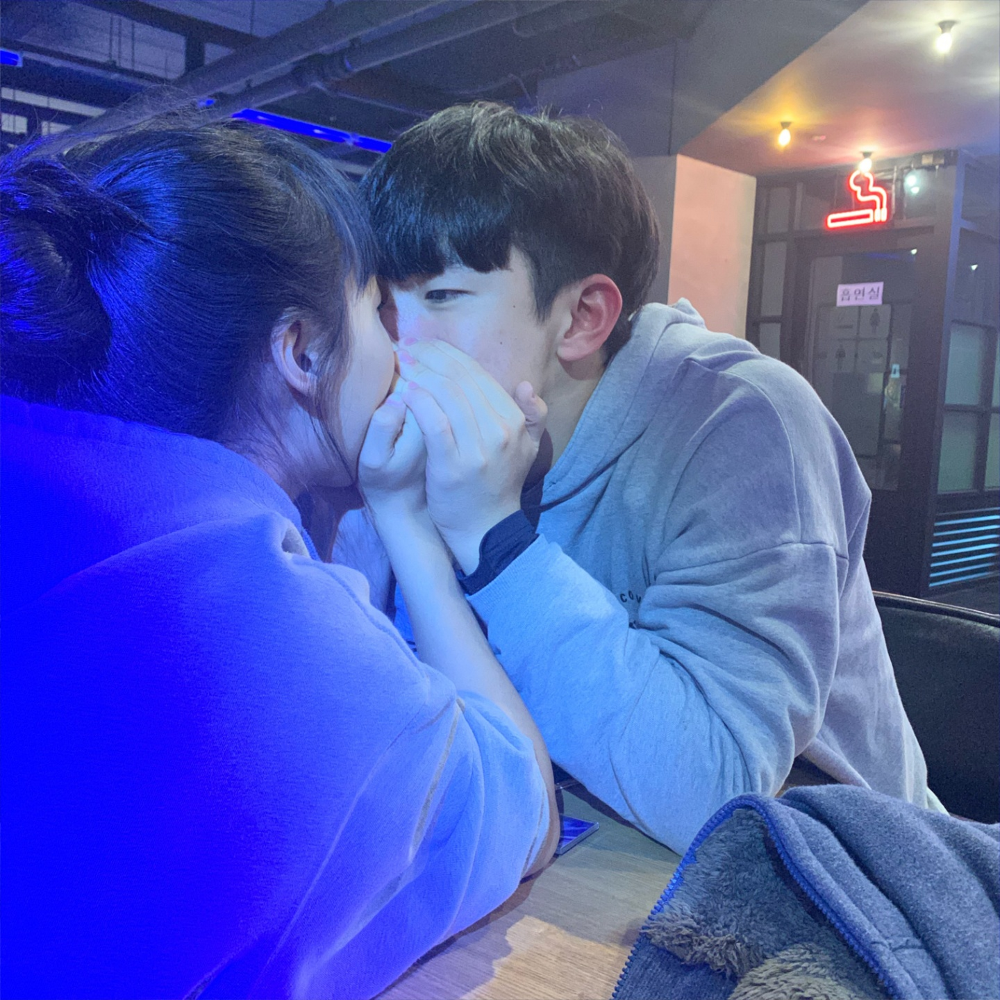

하은아 안녕 ㅋㅋㅋㅋ 너의 사랑스럽고 귀여우며 잘생겼다면 잘생겼다고 자랑할 수 있을정도의 외모를 소유한 98점짜리 남친 범수양
우리가 물론 200일때도 편지를 썻지만, 이제와서 한번 더 우리의 좋았던 추억을 다시금 떠올릴 수 있고, 또 지금까지 무난히 사이좋게 사귀어왔다는 것을 축하하기 위해 이렇게 편지를 쓴다.
다시금 말하지만 100일도 채 안되었을때는 서로를 이해 못하는 부분도 많았고, 서로 상처도 주었지만, 우리가 정말 잘 맞는지 큰 탈 없이 아직까지 사귀어 왔다는게 난 정말 감사해.
우리가 200일때는 졸업하지 않았고, 어딜 놀러갈만한 상황도 아니어서 매우 아쉽지만 그때도 사소한 선물을 주고 받으며 내포에서 시간을 보냈지..
지금 생각하면 그때 더 많이 놀러다닐걸 하는 생각이 들어.. 놀러가고 싶당ㅜㅜ 그때는 코로나가 심하지 않았던 시절이라 서로 대학가서 일탈을 즐긴다고 걱정했던게 ㅋㅋ 웃긴당
그때부터 거진 2년이 다되어가는 지금 내 생각은 전적으로 널 믿는다고 말해주고 싶다.
서로 대학 원서를 쓰고 같은 지역의 대학교에 서로 합격하였을때 우리는 서로 30분도 안걸리는 학교에 다님을 기뻐하며 설레여했지ㅋㅋ
난 이게 우리의 200일 선물이지 않을까 싶다 ㅇㅈ? 솔직히 개꿀이다 지금보다 더 자주 만날 수 있잖앙
정말 우리 대학교가면 맨날맨날 만나고 같이 맛있는거 먹으러 다니고 데이트도 하고 밤에 산책도 많이 하자고 얘기도 했었는데.. 이게 뭐람 ㅜㅜ
내가 군대를 다녀오면 하은이는 4학년이 되어 바빠지겠지.. 그래도 나 하은이 힘든거 아니깐 신경쓰이지 않게 절제하면서 놀러다닐게..
정말 고딩때는 뭘 그렇게 걱정이 많았는지 ㅋㅋ 참 웃긴단 말이양.. 정말 이놈의 코로나때문에 우리의 계획이 하나도 이뤄지지 못한게 내 한이야 ㅜㅜ
그래도 하은이가 전주에 가서 좋은 친구들을 사귄 것 같아서 나로선 참 다행이야.. 물론 대면을 시작하면 새로운 친구들도 사귈테고 그 전까지는 많이 외롭고 힘들테지만 난 하은이가 잘 해낼거라 믿어
뭐 김민주 박상하 걔들끼리만 논다고 하은이가 혼자있을때가 있겠지만.. 그때는 내가 전화해줄게.. 핸드폰 할 수 있을때까지... ㅜㅜㅜ
아 그래도 그때까지 걔들이 사귀고 있다면 하은이가 좋아하는 더블데이트나 한번 해보자 ㅎㅎ 나도 하은이 친구 많이 소개시켜줘.. 나도 친구 많이 사귀어서 하은이 소개해줄게
정말 하은이도 이제 2학기가 되면 대면을 할텐데 제대로하는 첫 대면때 많이 힘들텐데 그때 내가 곁에 있어주지 못한다는게 정말 많이 미안하게 생각해..
하은이가 힘들때마다 나에게 의지하고 싶은일이 굴뚝같겠지.. 성적, 친구, 선배, 등 다양하게 하은이를 힘들게 할 일들이 많을거야.. 그래도 그때 나에게 연락해줘..
너무 힘들다고 술 많이 마시지 말고 막 다른 사람한테 의지하고 그러지마.. 임지은이나 김민주 그런애들이면 ㅇㅋ.. 아 윤예인도 가까이 있구나.. 바빠서 하은이 못만나주려나 ㅜㅜ
정말 하은이가 학교에 나가고 의지할 사람 없어서 떠나면 나 우짜냐.. 그래도 그만큼 하은이가 힘들다는거니깐 이해해볼게.. 아무튼 나 없는동안에도 하은이는 자기할일 잘 하면서 기다릴거라 믿고있다
항상 힘내고 하은이에게 좋은일만 가득하길 내가 기도할게.. 걱정안한다면 거짓말이고 나 정말 많이 걱정하지만 그래도 나만큼 하은이 믿는사람이 없으니 잘 이겨내줄거라 믿는다!
하은이 항상 힘내고 고등학교 친구들이랑도 잘 지내고있어.. 술은 많이 먹지말고 놀러갈때면 정말 조심해 !! 헌팅 금지 !! ㅋㅋㅋ
ㅋㅋㅋㅋ 뭐 이렇게 하은이에게 많이 시키는지 참 진짜 내가 하고싶은말은 하은이 하고싶은거 하면서 우울해하지말고 재미있게 지내고 있으라고 말해주고 싶어
너무 사랑하고 소중하다는걸 하루하루 너무나도 크게 깨닫고 간다 내가 정말 많이 좋아해 나와서 보자
내가 훈련소에 가있는 동안은 솔직히 크게 걱정하지 않아 잘 지낼테니 내가 자대배치받고 핸드폰을 쓴다고해도 하은이 곁에서 의지할 곳이 못되어준다는건 사실이니 하은이가 훨씬 더 힘들어질 것도알고
그러니 그때 다른 사람에게 기대볼까해도 이렇게 내 진심을 보고 버텨달라고 이기적인 편지를 쓴다. 항상 연락할게 좋아해 하은아 결혼하자 ㅋㅋ
